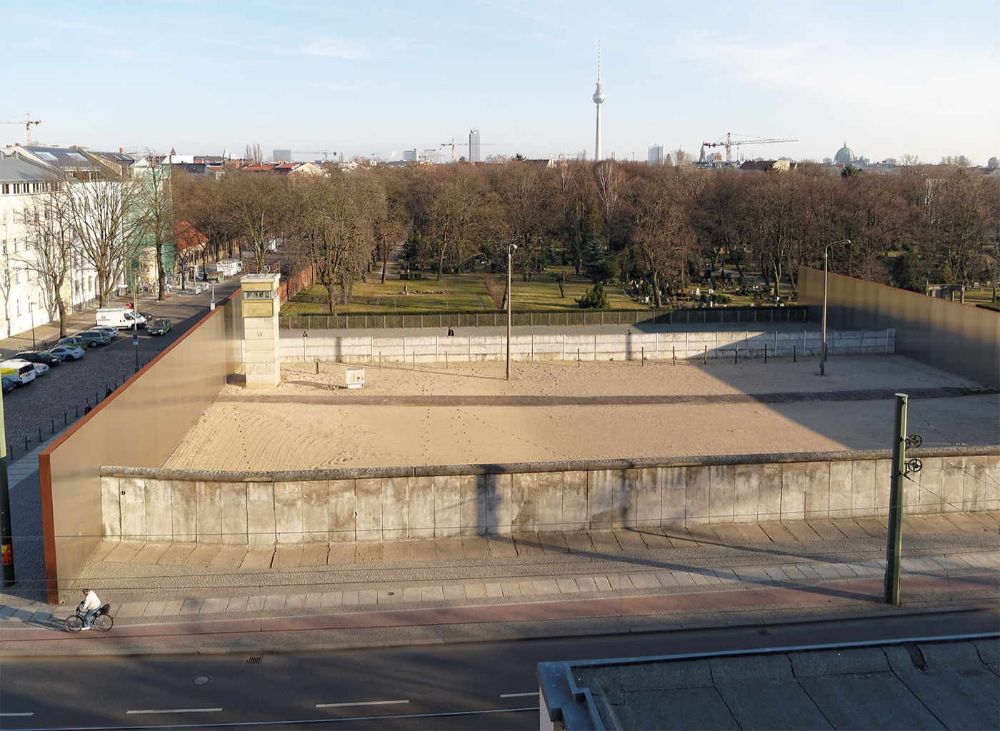

People picture one wall with graffiti. It was a system several layers deep. This is the preserved section at Bernauer Strasse, the only place in Berlin where the whole thing still stands. Tap a number.

Six numbered points sit on the photo above.